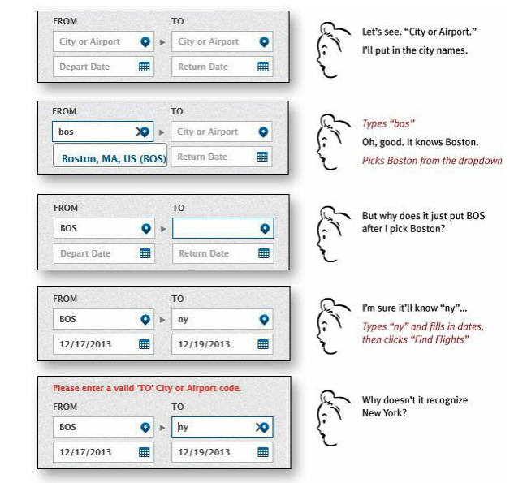
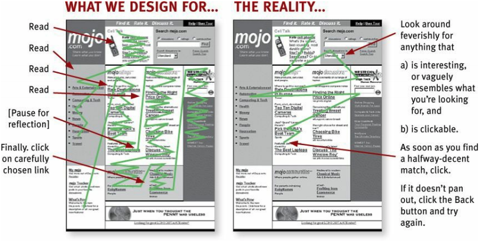

語料庫介面設計
Presenter:Zihyu Shen
Date: 2018.12.15
關於我
Fusion 前端肥宅
大數據 前端肥宅
台大語言所/Brain&Language Processing Lab
政大中文系
Outline
語料庫介面 很重要嗎？
聊聊WEB好設計(UI/UX)
聊聊語料庫介面設計
COPENS 改頭換面
語料庫介面 很重要嗎？
爬蟲->語料清潔->語料分析->標記->統計分析->???
語料庫介面 很重要嗎？
The most used and cited corpora in the public domain tend to be those which enablethe easiest and fastest extraction of relevant data. --A New Wordtree Corpus Interface
語料庫介面 很重要嗎？
你懂的,但別人不懂-->不懂就不會用-->心血就白費
語料庫推廣-->正視語料價值-->更多應用/跨領域激盪（輿情分析,chatbot)
讓web成為你的好朋友(線上語料庫/語料庫管理/標記系統)
省時間 省力氣 珍重生命
學一套介面設計原則 放諸四海皆準(?)
語料呈現介面類型?
Graphic user interface (GUI)
Web-based interface
command-line interfaces
既然都說是web based, 不聊聊web design?
那麼...大家覺得線上語料庫呢？
什麼因素影響你對網站的評價？
好不好看？
好不好用？
loading快不快?
站內有我需要的資料？
什麼因素影響你對網站的評價？
User interface(UI)
User experience(UX)
什麼因素影響你對網站的評價？


普世web介面設計
介面設計最重要的是
Don't make me think!
Don't make me think!
Don't make me think!
when I look at a Web page it should be self-evident. Obvious. Self-explanatory. I should be able to “get it”—what it is and how to use it—without expending any effort thinking about it. --Steve Krug
Not thinking
Thinking
Things that make us think
Things that make us think
Things that make us think

較好的設計...
You can’t make everything self-evident
系統真的很複雜
但你至少要可以自圓其說
On a self-explanatory page, it takes a little thought to “get it”—but only a little.
You can’t make everything self-evident
仔細處理size/color/layout/naming,減少使用者負擔
RULE: If you can’t make something self-evident, you at least need to make it self-explanatory.
Why is all of this so important?
How we really use the Web
We’re usually on a mission.
We know we don’t need to read everything. Scanning is how we find the relevant bits
How we really use the Web

How we really use the Web
介面設計原則
Place users in control of the interface
Make it comfortable to interact with a product
Reduce cognitive load
Make user interfaces consistent
Make actions reversible (be forgiving)


Create an easy-to-navigate interface
Provide visual cues.
Predictability

Provide informative feedback (Be acknowledging)


Show the visibility of system status

Accommodate users with different skill levels


Make it comfortable for a user to interact with a product
- Eliminate all elements that are not helping your users
- Don’t ask users for data they’ve already entered
- Avoid jargon and system-oriented terms

Make it comfortable for a user to interact with a product
Apply Fitts’s Law to interactive elements
為起始點(滑鼠游標)與目標物(按鈕或其他操控物件)之間的距離和目標物的大小，決定了從起始點移動到目標所花費的時間
big buttons are easier to interact with
Make it comfortable for a user to interact with a product
Design accessible interfaces
design for low vision, blindness, hearing impairments...
Color--strong impact on accessibility.
Make it comfortable for a user to interact with a product
Use real-world metaphors

Make it comfortable for a user to interact with a product
Engineer error
Make it comfortable for a user to interact with a product
Error recovery

Make it comfortable for a user to interact with a product
Protect a user’s work
Reduce cognitive load
human working memory can handle seven-plus-or-minus two “chunks” of information--George Miller
Chunking for sequences of information or actions
without normal spacing ==> incorrectly-captured phone numbers
Reduce cognitive load
Reduce the number of actions required to complete the task
three-click rule, which suggests the user of a product should be able to find any information with no more than three mouse clicks.
Reduce cognitive load
Recognition over recall


Reduce cognitive load
Promote visual clarity
- Avoid presenting too much information at one time on the screen
- grouping similar items together, numbering items, and using headings and prompt text
Make user interfaces consistent
The main idea of consistency is the idea of transferable knowledge
Visual consistency (Consistency of look)
The same colors, fonts, and icons should be present throughout the product
Make user interfaces consistent
Functional consistency (Consistency of behavior)e.g.,buttons and menu items, should not change within a product.
- Follow platform conventions
- Don’t reinvent patternsPopular patterns become conventions and the majority of users are familiar with them.
- Don’t try to reinvent terminology
介面設計前先想想...
Different websites:E-commerce Websites,News websites,Video (Streaming) websites...
- 誰會使用你的網站?Hint: the answers can’t be “everybody”
- 為什麼人們要使用你的網站?
- 你的網站解決了什麼問題？
- 什麼因素讓人們回鍋？
- 什麼因素讓你的網站脫穎而出?
了解你的使用者--Persona
了解你的使用者--Persona
- background information
- goals
- skills
- attitudes
- pain points
- behavior patterns
- context-specific details bank app==> 存款/投資組合
***persona 需要基於real data
為什麼了解你的使用者很重要?
了解(期待/需求)==>滿足(期待/需求)
從使用者角度切入,而非設計者觀點
提供設計問題的解決方案e.g.bigger ‘Send’ button
語料庫大哉問
- 語言學研究者 / 找語料做研究
- 外語老師 / 找上課用材料,編教材
- 學生 / 老師叫我來看一看？
- 不同領域 / 看看能不能讓我的系統多點分析？探索語料庫...
Q: 誰會使用你的網站?
A: 語言學研究者,外語教學老師,學生,不同領域使用者:輿情分析,AI
Q: 為什麼人們要使用你的網站？
A:
語料庫大哉問
Q: 你的網站解決了什麼問題？
A: 沒有語料可分析, local端跑不動資料分析...
Q: 什麼因素讓人們回鍋?
A: 查詢結果準確率高, 符合分析的需求, 好好用！...
Q: 什麼因素讓你的網站脫穎而出?
A: 提供別的語料庫沒有的分析技法, 美美噠的介面...
介面可以如何設計？
符合不同TA的需求,同時提供簡易跟困難的操作
專業術語要有平易近人的解釋
良好的第一印象,使用流暢
資料查找容易,資料呈現看得懂！
資料視覺化,幫助探索語析
語料庫介面呈現
Trustworthiness in Web Design
Navigation
搜尋畫面（進階搜尋）
結果呈現畫面
令人信任的網站--Design Quality
看起來合法又專業！重點在於...
- 網站的內容及標題都有組織看得懂的nav用語
- 網站的視覺得宜,圖片清楚清潔公司綠的好,黑的好？
- 錯字,無效連結,錯誤大忌！
令人信任的網站--Design Quality

令人信任的網站--Upfront Disclosure
公開透明對使用者有用/重要的資訊
不僅公開,還要易找
沒說明退費/換貨原則?隱藏多的服務費？運費？
要資料,先填表格？
先要我的個資？問太多問題?
令人信任的網站--Upfront Disclosure

令人信任的網站--Comprehensive, Correct, and Current
站內提供大量相關內容==>顯示內容有組織,充實,並且願意幫助user
搬家公司：打包小撇步
清潔公司：打掃完照片？？辦公室大樓照片？？
令人信任的網站--Comprehensive, Correct, and Current


令人信任的網站--Connected to the Rest of the Web
無法被第三方review, 跟外界絕緣==>想隱藏什麼?小小小公司？
親朋好友乃至網友都不推薦？
喜歡看網友的quotes,case studies
更信任有external sites推薦你！
Advanced query
大量資料,撈出想要的？
Basic search vs. Advanced search
有別於一般網站的基本搜尋
Advanced query
- 搜尋面板位在哪?
- 搜尋時常用的UI元件
- 搜尋結果呈現
- Advanced mode for technical user
Advanced query--搜尋面板位在哪?
所有搜尋條件全呈現在UI上
user can easily scan them ==> user friendly
資料量大時,work well
壞處：占空間
Advanced query----搜尋面板位在哪?
只呈現常用的搜尋條件,Clicking ‘More’ option
當有常用搜尋項目時,work well
使用者無需在意他們不需要的細節
壞處：點擊數++, 資料量大不適合
Advanced query--搜尋時常用的UI元件
Input box
- 當沒有定義好的搜尋條件時
- helpful placeholder
- multi-value, 要有hint

Advanced query--搜尋時常用的UI元件
Checkbox list
- multiple options
- selection and deselection of values==>user friendly control
- default: unchecked
- 下拉式選單

Advanced query--搜尋時常用的UI元件
Hyperlinks
- 可以直接點擊查詢結果,無需go button
- 顯示selected state
- current level in hierarchy

Advanced query----搜尋時常用的UI元件
Radio button list
select one value
user has to execute search explicitly after making selections

Advanced query----搜尋時常用的UI元件
Visual icon
Visuals provide a good and appealing way to present information.
Providing tooltips along with icons/visuals
Standard icons/visuals


Advanced query----搜尋時常用的UI元件
Slider
select a value from within a range
start and end values are known
More user-friendly for a touch devices

Advanced query--Use effective autosuggest
Use effective autosuggest

Advanced query--一次呈現多少項目?
display all values when they are less than 8
more than 8, display MORE option
item still exceeds, provide remaining items in an extended list or a dialog box

Advanced query--如何執行搜尋
clicking a Search or OK button, or hitting Enter key
on run-time when user changes a parameter
- Executing search on run-time provides a simple and enjoyable experience to user where he can see the results just after each click.
- 使用者必須設好所有條件才能搜尋,若想改任一條件,每次都要點擊
- 使用者想回到之前的搜尋結果,必須重新輸入之前的查詢條件,問題是他可能忘了
COCA 搜尋介面
- 我要打什麼字？
- 什麼是pos？用checkbox就好
- 下面的checkbox是什麼?灰字可以點嗎？
- 點完section後,要按什麼？
- 點完section1後,為什麼點section2會長出下面sorting?要怎麼只選section
- 選完一個filter後,繼續選下個filter,結果會是全部的條件都被過濾嗎？
- pixel > section> spoken/ ignore > You cannot [SORT BY] [RELEVANCE] for single words. This option is only possible for COLLOCATES searches and for searches with more than one word.
- sort/limited 在filter選單上,跟在sections裡,有什麼不同?
- reset 會閃一下？
搜尋結果呈現--位置
搜尋結果呈現--Search progress
- 顯示內容正被載入
- goes wrong==> proper message

搜尋結果呈現--顯示所有搜尋條件
- 與搜尋結果做關聯
- 可取消搜尋條件
- see filters on other page ==> disconnected behavior

搜尋結果呈現--顯示結果數量
- 多少結果被搜出
- 需要多少navigation才可看到全部結果

搜尋結果呈現--Empty results
- give user some suggestions
- matched few of the defined parameters


搜尋結果呈現--others
- Provide accurate and relevant results
- Prioritize results: the most important hits appear on the first page
- Correct typos
- Keep recent user’s search queries
Advanced mode for technical user
Proper and instant help
即時驗證qury format 並提示正確格式 > 搜尋後再提示


Navigation
與usibility息息相關
users start using apps or websites with particular aims and expectations
==> best and easiest route
==> solving users’ problemsfulfill their goals/successfully interact with the product
without confusion or unnecessary clicks
製作Navigation前先想想...
- 這個網站需要哪些頁面？
- 各頁面的主題為何？頁面的內容是否根據相關性作組織？
- 之後若要擴充內容,會花多少力氣?
- 有多少user groups會使用你的網站? (e.g. logged in/ out, subscription types, advertisers, etc.)
- 不同的user groups 使用網站的目標是什麼?
製作Navigation前先想想...
Keep it simple
simplicity can be deceptive. Dig deeper and you may discover that what is actually quite complex has been cleverly packaged in a way that feels simple. This is IA in action.
Navigation可作的使用者研究
Card Sorting with Target Users

Word Sketch Navigation
- Icon太多,sidebar nav, top nav, 個別頁
- Icon需要hover才看得到label
- 可以重新思考分類,以及nav item的排列順序(backgroup jobs next to subscribe?)
- manage corpus應該獨立出來
COCA Navigation
- Icon使用不夠有代表性,沒有附上文字說明,不好理解
- i--overview跟首頁一樣
- copus說明文件應該收在一起
- nav 沒有active的狀態
- navigation 順序再思考
- search旁的item會一直改變(frequency/chart/upgrade account)
- context: Once you do a search, your results will be displayed here.
COPENS改頭換面
References-- Web Interface for Corpus
WebNLP - An Integrated Web-Interface for Python NLTK and Voyant
New version of the BYU corpora
Computational Methods for Corpus Annotation and Analysis
WhiteLab 2.0: A Web Interface for Corpus Exploitation
References--UI/UX
The 4 Golden Rules of UI Design
Usability 101: Introduction to Usability
10 User Interface Design Fundamentals
Putting Personas to Work in UX Design: What They Are and Why They’re Important
3 Web Design Software to Easily Help You Build an Awesome Website – Without Any Technical Skills
References--Trustworthiness/Advanced Search/Navigation
Trustworthiness in Web Design: 4 Credibility Factors
How To Improve Advanced Search UX?
Death to Complexity: How we Simplified Advanced Search
Best Practices for Search Results
Designing Search: Results Pages
3 essential rules for effective navigation design